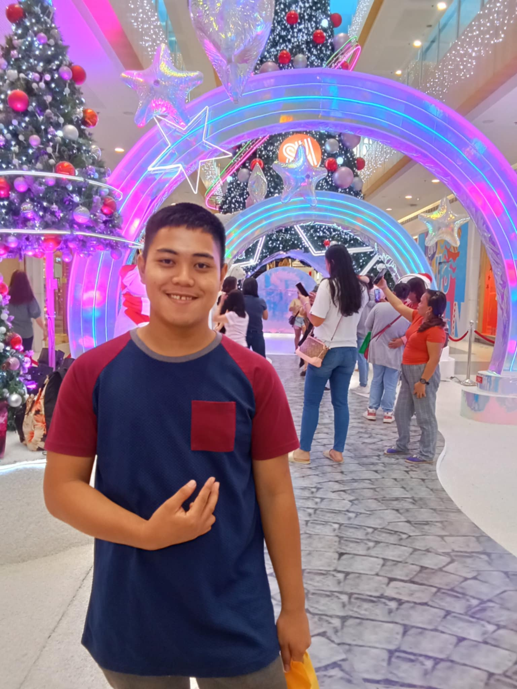
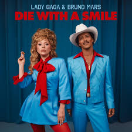
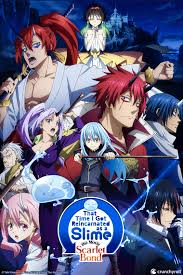

About Myself
Hello! My Name is Yance C. Magoncia. I'm 19 years old, I live in Tagcatong,Carmen,Agusan Del Norte and I'm currently enrolled in Saint Michael College of Caraga as a BSIT Student.
Hello! My Name is Yance C. Magoncia. I'm 19 years old, I live in Tagcatong,Carmen,Agusan Del Norte and I'm currently enrolled in Saint Michael College of Caraga as a BSIT Student.
My early years were brimming with joy, affection, and boundless escapades. I would spend my time outdoors, scaling trees and enjoying the company of friends until dusk. The evenings were warm and inviting, filled with family dinners and bedtime tales that ignited my creativity. I felt fortunate to be surrounded by loved ones. Those cherished, joyful experiences have profoundly influenced the person I am now.

My teenage years were somewhat uncomfortable, and I frequently felt like I didn't fit in. I wasn't very outgoing, so I kept to a tight-knit group of close friends. They provided me with support while I navigated the journey of discovering my identity and finding my place in the world.
In my young adult years, I’ve begun to find my way. I’m learning to feel more comfortable and understand my true self. I’m discovering what I want from life and the path I want to take. It’s been a journey of self-discovery, and although I still have much to learn, I feel more confident in my choices and direction.

Since I was a child, I’ve always been interested in computers. This grew into a love for video games, which bring me joy. They let me escape, challenge myself, and explore new worlds.

Since I wasn't very social, reading became my escape to explore different worlds. I especially loved fantasy books, which offered adventures and let me dive into new realms of imagination.

Soccer was a big part of my life from elementary to high school. I was really passionate about it and played whenever I could. However, as I’ve gotten older, my interest has started to fade, and I find myself focusing on other things.

My favorite dessert is ice cream. I love cold and sweet dessert, and ice cream fits to that. Some variant of ice cream are affordable and some are also expensive. Expensive ice cream taste great but this ice cream can only bought buy rich people and also there a ice cream that are affordable like the one in the ice cream vendor.
One of my favorite artists is Bruno Mars. His voice is amazing, and I hope to sing like him someday. His talent is truly exceptional. Also the one that i like his song the most is (die with a smile) because this song is the one that i heard and also it is a good song.
My Favorite anime show is That Time I Got Reincarnated As a Slime. It's a Fantasy, Isekai, Action, Adventure, and Comedy Anime. I really like this anime it has lots of stories and adventure that i can enjoy watching.
My Favorite Person is My Father, with whom i grow up. My Father is the one who guide me on my path to where i am now, He's the one who supported me and take cares of me when i was little. I am grateful to my Father for the support that he have given to me.
This is my friend! He's the person I can talk to about my problems, and he always gives me great advice. We hang out during breaks and enjoy playing games together.